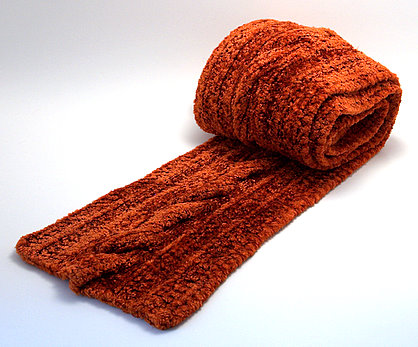
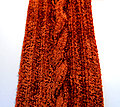

|
||
Premium Patterns Wintry Mix Mitts Love Bytes HawkeyeFree Patterns Kiddie Cadet Summerlin Ruffled Scarf Seamless DS Sock Simply Seamless Pouch Myriads of MushroomsExtras DIY Mitten Blocker Felt Patch Tutorial Yarn Dyeing Tutorial Needle Pouches Knitting Journal |
May 07, 2007 - Posted by Grace SchneblyAll I need now is a velvet track suit!For starters I wanted to mention that the voting has started for the Felt Inanimate Object challenge on Craftster! Voting lasts until the 12th, so please vote for my felt model of the Space Shuttle. Wish me luck!!! You have to have a Craftster account to vote, so if you don’t have one you can always sign up hehe. Click here to vote now! Now onto the main attraction...  Project Specs Ahhh my Vintage Velvet is finally complete! All my worrying was for not because I think it turned out great! I am really glad that I picked this color too; I think that it gives the scarf a real vintage look. This will go great with my black winter coat, and I can’t wait to show it off! Too bad (or luckily…) it is starting to warm up in Boston. It is still chilly at night though, so I should be able to wear it before summer comes. It is amazing the way the yarn reflects and traps the light. It makes the texture really pop, especially after felting. The whole look and feel of the yarn has changed. It definitely have transformed from being squishy and silky and into velvety. The yarn really makes the scarf into something special. I need to find more projects that would work with this yarn! The scarf didn’t shrink lengthwise after felting, probably because I stretched it while it was drying. At 60” long, it is a little short for my taste, but it will definitely work. I guess I just like my scarves long! It did shrink widthwise after though. It is now 4.75” wide, and before felting it was about 5.25”. The pattern said that it would shrink about 10%, so it turned out exactly as expected. This scarf is really floppy, and it doesn’t have much structure at all. It also has a slight shedding problem… Like I mentioned before it shed a ton in the washer. If you give it a shake now that it is dry, you will probably see one or two fibers fly off it. It doesn’t seem like a really big deal though. This scarf would make an amazing gift for someone who is REALLY special. It took about a week to knit, and I didn’t devote my whole attention to it. The yarn is expensive, but I have seen it on sale at several online yarn shops since I purchased mine. The amount of finishing required is pretty minimal really, and the felting process is kind of set and forget since you let it run through a full wash cycle. Also popping it into the dryer cuts the drying time dramatically. Overall I love this scarf and I love the yarn! I think everyone should make one of these because they are fun, easy, and the transformation is really great! I will be making another of these in the future I am sure! |
   Recent ReviewsRecent Posts
 Our Favorites
|
| © 2007 KathrynIvy.com | ||
{kind=link}
{kind=link}